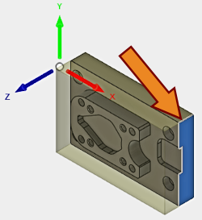
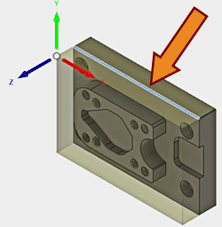

<div id="wcs_orientation_axisX"><p>平面に X 軸を設定します。</p>
<table class="tipTable" cellspacing="10">
<tr>
<td><center></center></td>
<td><center></center></td>
</tr><tr>
<td><center><p><b>面による X 軸</b><br>
<em>X 軸に垂直な面を選択します</em></p></center></td>
<td><center><p><b>エッジによる X 軸</b><br>
<em>X 軸に平行なエッジを選択します</em></p></center></td>
</tr></table>
</div>